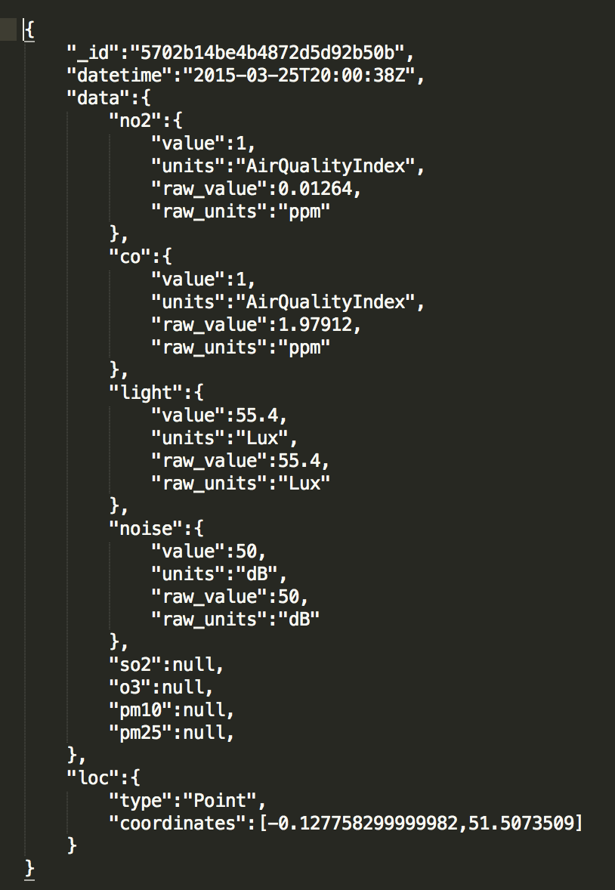

Iterations and Forks
Iterations and Forks
During the design process we initally all came up with several designs which we then combined and iterated over to produce the final design we used for the final version of the app.
The schema went through several iterations. Initally we had something like this:
We then decided to remove the deviceId field as not all data sets had this field or had it in a different format e.g siteName. We also changed the data field so that even if a sensor didn't have data about a specific type of pollution it would still be inserted with a null value. We also include more information about the polution like so:
Finally we changed the data field again by removing taking everything out of the array so data could be accessed like this: data.no2 rather than data[0].no2 for example. It looks something like this:
We also made changes to the URI scheme for the API over the course of the project as we added more requests. Initially we only accepted requests to /api/all which could take parameters but as we added more API end points /api/all simply showed all the data, /api/all/near took parameters to filter data and /api/small only showed the closest data.
The error handling for the API also went through several iterations. Initally there was none at all but this was not particularly ideal as it meant the requet would just hang on incorrectly formatted requests. We then changed it so it would just end the request with an empty response on incorrectly formatted
Requests but this still gave the user no indication of why the request failed. So when then added in an api error html page that would be returned that indicted what was wrong with the request. The problem with this though is that if the user wasn't making the requests with a browser whatever they are using to make the requests wont know how to render the error page. So finally we settled an a JSON based response instead.
For the front end first of all we built the layout files so visually it matched the finalised UI design. Throughout the construction we used dummy data to test as we went. Then we added basic functionality bit by bit, starting with implementing button actions (from main menu to specific pages, from scale view to detailed view).
Notifications between the phone and the watch were implemented upon the entering of a new location.
Then the scale features were added, both the 1-10 scale on the pollutant page and the icon colours on the main menu. The scale on the specific pages had to undergo multiple redesigns in order to find a balance between detail and clarity of view.
Finally we linked the UI with the real incoming data, adjusting any features accordingly.